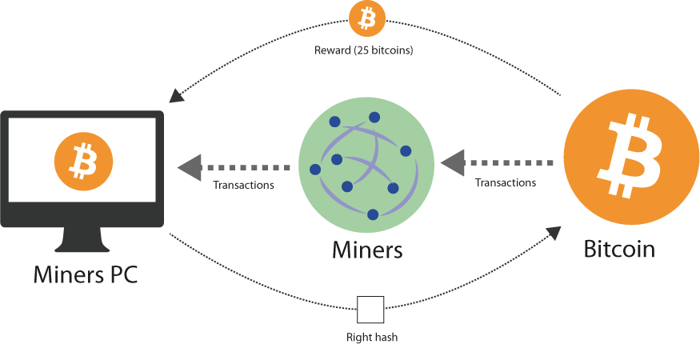
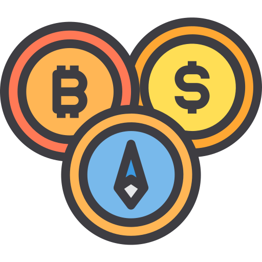

Partie 1
Petit point historique
L'idée fut présentée pour la première fois en novembre 2008 par une personne, ou un groupe de personnes, sous le pseudonyme de Satoshi Nakamoto. En février 2009, il diffuse la première version du logiciel Bitcoin sur le site P2P Foundation et pour faire fonctionner le réseau, il met à contribution son ordinateur et engendre ainsi les premiers bitcoins.
Avant de ne plus avoir de nouvelle de Nakamoto fin 2010, il désigne Gavin Andresen comme son successeur en lui donnant accès au projet SourceForge bitcoin et une copie de la clef d'alerte. Cette dernière est une clef cryptographique privée unique permettant d'atténuer les effets d'une attaque potentielle sur le système Bitcoin.
Création et Circulation
Afin de créer du Bitcoin, cette monnaie s’appuie sur un logiciel, où le système est basé sur des opérations pair-à-pair : c'est la blockchain.
En savoir plus
Ceux qui transigent dans ces monnaies sont à la fois clients et serveurs. Les transactions Bitcoin sont contrôlées et vérifiées de manière intensive et crypté par le biais de calculs dans une pile d'ordinateurs spécialement conçue, appelée "fermes de minage". Le minage définit le comportement de certains utilisateurs, notamment en assurant le bon fonctionnement de la chaîne de blocs et la création de nouveaux blocs, aboutissant à la production de nouveaux bitcoins. Son émission n’est pas contrôlée par une banque centrale, comme l’euro ou le dollar, mais par un protocole informatique, conçu de façon à limiter le nombre final de bitcoins en circulation à 21 millions
Pour chaque nouveau bloc validé, le travail de minage est rémunéré par les Bitcoins récemment crée et par les frais de transactions qui ont été traitées. Le Bitcoin peut être échangé contre d’autres monnaies ou commodités, bien ou service. Le taux d’échange du Bitcoin est fixé sur des places de marché spécialisé et varie selon la loi de l’offre et de la demande.
L’achat de Bitcoin est possible en ligne sur des plateformes spécialisées, des bornes physiques ou simplement en l’échangeant avec d’autres personnes qui en possèdent déjà contre des biens ou services. Les plateformes mise en place permettent également de suivre le cours du Bitcoin à chaque instant.
La place du Bitcoin parmi les titres spéculatifs 
Le Bitcoin est considéré comme la cryptomonnaie originelle. Elle possède aujourd'hui la capitalisation boursière la plus importante et la plus connu. C'est la référence des cryptomonnaie car est parfois considéré comme bulle financière.
Cepandent cela est de moins en moins vrai car d'autre cryptomonnaie parviennent à effectuer des percées remarquables notamment Ethereum qui a déjà réussi à atteindre plus de 4 000 euros l'unité.
Ses points positifs, négatifs et les résonds de son succès
-
À court terme, le transférer d'argent à l'international ce fait dans un laps de temps réduit et pour un coût beaucoup plus faible qu'en recourant à une banque
-
À long terme, les libertaires considèrent que les devises traditionnelles vont disparaitre et "qu'il faudra utiliser d'autres monnaies"
En savoir plus
-
La masse monétaire de bitcoins est limitée. Vous ne pouvez pas avoir une émission de bitcoins à l'infini qui créerait de l'inflation qui pourrait donc augmenter la valeur du bitcoin
-
Les traders voient en cette cryptodevise le placement idéal pour conserver de la valeur hors des monnaies contrôlées par les banques centrales.
-
Du faite que cette monnaie ne soit pas contrôlée permet à certaine personne de faire du blanchiment d'argent ou effecter des trafics illicite
-
L'engouement pour les ICO (Initial Coin Offering). Ces nouvelles levées de fonds en cryptomonnaie ont également participé à l'augmentation du cours du Bitcoin. Il s'agit d'un mode de financement participatif basé sur la technologie de la blockchain et un système de jetons virtuels : les tokens.
-
Avec le Bitcoin, il n'est pas possible de mettre en œuvre une stratégie de braquage. Il n'y a pas d'entité financière qui contrôle la cryptomonnaie ou il faudrait que le pirate contrôle au moins 51 % de mineurs. Or, c'est impossible tant la masse monaitaire est élevé.